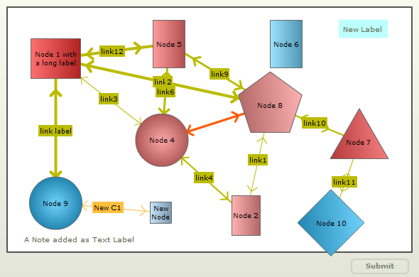

Since the drag node chart is a visual data widget, you might need to submit the modified data to your scripts for further processing. The drag-node chart offers you two methods to do the same:
- You can submit the updated data from chart to your server side script (as form elements) in XML format.
- Or, you can submit this data as XML/array to client side JavaScript functions. These functions can now handle the data in the way they want to.
In this section, we'll see how to submit the data to a server side script.
To enable submission of data to server side script, you first need to make sure that the submit button is not hidden on your form. To show it, you use the following attribute:
<chart ... showFormBtn='1' ...>
This adds a submit button to your chart as below:

Now you need to define the form properties i.e., where and how this button would submit the data to. The following attributes let you define the form properties:
| Attribute Name | Description |
| formAction | URL of your server side script to which you want to submit data. You can either use relative path or absolute path. The name of form variable which is to be requested in this page is strXML. |
| formMethod | Method of form submission - POST or GET. We recommend POST method if you're submitting data as XML. |
| formTarget | Target of the form - _blank or _self. |
| formBtnTitle | Lets you configure the text for the submit button. By default, it's "Submit" |
| btnTextColor | Color of the button text |
| formBtnWidth | Lets you configure the width of the submit button. |
| formBtnBorderColor | Border color for the submit button |
| formBtnBgColor | Background color for the submit button. |
formAction is the most important attribute which contains the full path to your server side script.
Example:
<chart ... showFormBtn='1' formAction='../MyDataProcessor.asp' ...>
If you do not specify this attribute, the form wouldn't submit at all.
You can also define the form method (GET or POST) and target (_self or _blank) using the attributes above.
Now, in your server side script (MyDataProcess.asp or MyDataProcess.php or MyDataProcess.aspx or ...), you can request the updated XML data from chart as strXML variable. For example, given below is the ASP code that simply requests the XML from chart and outputs it:
<%
Response.ContentType="text/xml"
Response.Write(Request("strXML"))
%>
In your scripts, you can request the XML data, parse it and then process it further as per your requirements.
Let's take an example to view the updated XML after the data is submitted. To show the changes we have used the same chart which is used in the Overview page. We will make the following run-time changes in the chart:
- Delete Node 3 from the top right corner of the chart
- Added the label named "New Label" on the top right corner of the chart
- Added a new Node named as "New Node" below "Node 4"
- Added a connector named as "New C1" between "Node 9" and "New Node"
After making the changes the chart will look as under:

For the above chart, the following XML data is submitted when Submit button is clicked. Note that, in the XML data, shown below, we have used highlighted blocks to specify the nodes where the changes have been made. The data is as under:
<chart palette='2' xaxisminvalue='0' xaxismaxvalue='100' yaxisminvalue='0' yaxismaxvalue='100' is3d='1' showformbtn='1' viewmode='0' >
<dataset seriesname='DS1' >
<set id='1' x='12' y='79' name='Node 1 with a long label' height='56' width='70' shape='RECTANGLE' toolText='Node 1 with a long label' color='FE3233'/>
<set id='2' x='59' y='15' name='Node 2' height='56' width='40' shape='RECTANGLE' toolText='Node 2' color='FE9191'/>
<set id='4' x='38.2631578947368' y='45.7246376811594' name='Node 4' radius='37' shape='CIRCLE' toolText='Node 4' color='FE8181'/>
<set id='5' x='40' y='85' name='Node 5' height='67' width='45' shape='RECTANGLE' toolText='Node 5' color='FE7272'/>
<set id='6' x='69' y='85' name='Node 6' height='67' width='45' shape='RECTANGLE' toolText='Node 6' color='72D4FE'/>
<set id='7' x='87' y='45' name='Node 7' numSides='3' radius='47' shape='POLYGON' toolText='Node 7' color='FE5151'/>
<set id='8' x='65' y='60' name='Node 8' numSides='5' radius='47' shape='POLYGON' toolText='Node 8' color='FE9191'/>
<set id='9' x='12' y='20' name='Node 9' radius='37' shape='CIRCLE' toolText='Node 9' color='33C1FE'/>
<set id='10' x='80' y='12' name='Node 10' numSides='4' radius='47' shape='POLYGON' toolText='Node 10' color='33C1FE'/>
<set id='ND' x='37.8947368421053' y='16.231884057971' name='New Node' height='30' width='30' shape='RECTANGLE' toolText='New Node' color='afd8f8'/>
</dataset>
<connectors color='FF0000' stdthickness='5' >
<connector from='1' to='9' color='BBBB00' strength='0.96' alpha='100' arrowAtStart='1' arrowAtEnd='1' link='' label='link label' />
<connector from='1' to='5' color='BBBB00' strength='0.8' alpha='100' arrowAtStart='1' arrowAtEnd='1' link='' label='link12' />
<connector from='1' to='8' color='BBBB00' strength='0.8' alpha='100' arrowAtStart='1' arrowAtEnd='1' link='' label='link2' />
<connector from='1' to='4' color='BBBB00' strength='0.3' alpha='100' arrowAtStart='1' arrowAtEnd='1' link='' label='link3' />
<connector from='2' to='4' color='BBBB00' strength='0.4' alpha='100' arrowAtStart='1' arrowAtEnd='1' link='' label='link4' />
<connector from='2' to='8' color='BBBB00' strength='0.33' alpha='100' arrowAtStart='1' arrowAtEnd='1' link='' label='link1' />
<connector from='4' to='5' color='BBBB00' strength='0.7' alpha='100' arrowAtStart='1' arrowAtEnd='1' link='' label='link6' />
<connector from='4' to='8' color='FF5904' strength='0.6' alpha='100' arrowAtStart='1' arrowAtEnd='1' link='' label='' />
<connector from='5' to='8' color='BBBB00' strength='0.6' alpha='100' arrowAtStart='1' arrowAtEnd='1' link='' label='link9' />
<connector from='7' to='8' color='BBBB00' strength='0.5' alpha='100' arrowAtStart='1' arrowAtEnd='1' link='' label='link10' />
<connector from='7' to='10' color='BBBB00' strength='0.3' alpha='100' arrowAtStart='1' arrowAtEnd='1' link='' label='link11' />
<connector from='ND' to='9' color='ffbe3c' strength='0' alpha='100' arrowAtStart='1' arrowAtEnd='1' link='' label='New C1' />
</connectors>
<labels >
<label text='A Note added as Text Label' x='18' y='5' color='60634E' alpha='100' fontSize='10' bgColor='' borderColor='' padding='5' allowDrag='1' />
<label text='New Label' x='88.0701754385965' y='91.0144927536232' color='60634e' alpha='100' fontSize='10' bgColor='bcfffc' borderColor='' padding='7' allowDrag='1' />
</labels>
</chart>
Next, we'll see how to request the chart data in client side JavaScript functions.